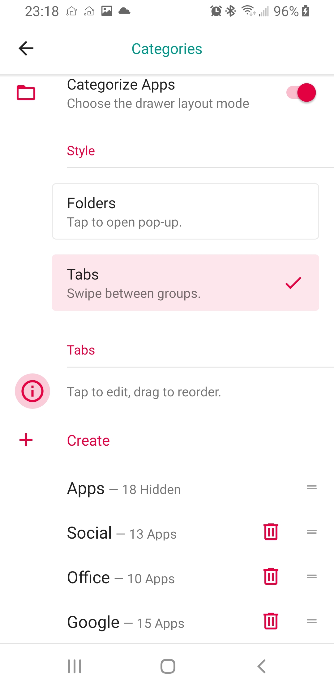

Me encantan los launchers de software libre con el aspecto Android puro.
Omega Launcher es un Fork del conocido Lawnchair.

Es una alternativa FLOSS a Nova con muchas de las pequeñas personalizaciones y ajustes.
Tiene una organización de cajones de aplicaciones a través de pestañas y respaldo a una ubicación personalizada.
Las APK están disponibles en GitHub y en el canal de Telegram.
Probablemente, dentro de poco podremos encontrarlas en fdroid.
Si buscas un lanzador al más puro estilo Android puro, Omega Launcher te va a encantar.
Dale una oportunidad
Publicado por Angel el Monday 13 September del 2021
También te puede interesar:
Powered by org-bash-blog
Written in OrgMode with Emacs and converted to HTML with Pandoc

Este obra está bajo una licencia de Creative Commons Reconocimiento-NoComercial-CompartirIgual 4.0 Internacional.